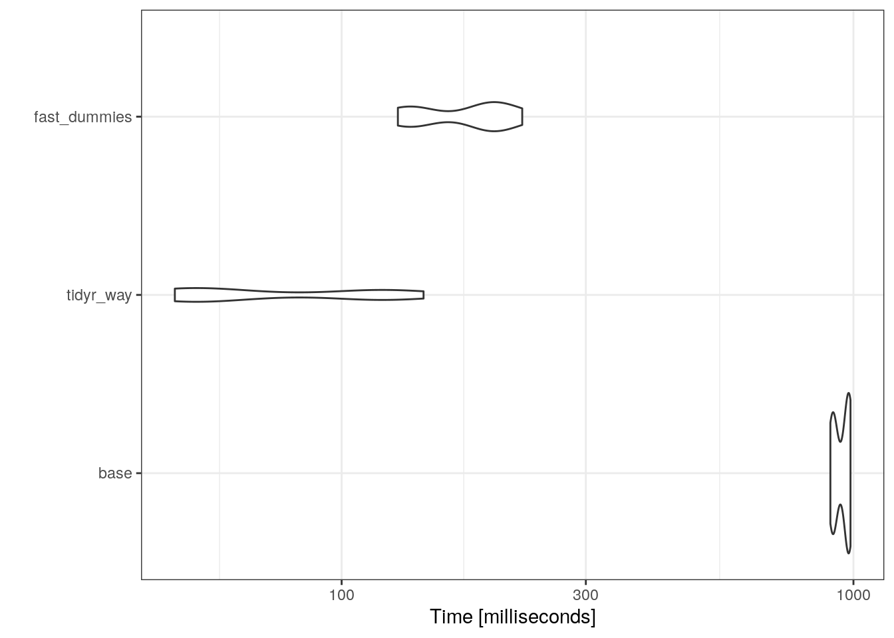

As you may have guessed from the cliched title that I couldn’t resist, this post is about dummy variables. Specifically, comparing a couple of different ways to create them in R, and seeing which is fastest.
What are dummy variables?
Dummy variables, sometimes called indicator variables, are a way to encode categorical variables as numerical (often binomial), so that we can model them in a regression. Luckily, R will often deal with creating these dummy variables under the hood when we use something like lm to model a regression, but this is not true for all methods.
As an example, let’s say we are interested in the effect of three different types of crops (corn, wheat, rice) on soil nitrogen content (% N). The dataset may look something like this:
n.sample <-100000#how many rows of data will you have?crop.types <-c("corn", "rice", "wheat") #what are the levels of your categorical variable?nitrogen.data <-data.frame(crop_type = crop.types[sample(1:3, n.sample, replace = T)],perc_N =runif(n.sample, min =0, max =1 ))head(nitrogen.data)
\(\beta_1\), \(\beta_2\), \(\beta_3\) are the coefficients for the effects of corn, wheat, and rice, respectively
\(corn_i\), \(wheat_i\), \(rice_i\) are all binomial variables (0/1) for the type of crop grown in field i.
The model formula in the call to lm looks much simpler than this. That is because, under the hood, R is creating dummy variables from our crop_type variable, creating a binomial variable for each level of our categorical variable, without us needing to specify it.
When recording our data, it is much easier to do it like the data frame on the left, which is more human readable. Then we can turn it into the data frame on the right programmatically using R. This blog post will go over several ways to do this:
the model.matrix function in base R
via the pivot_wider function of the tidyr package (tidyverse framework)
the fastDummiespackage
And then compare the speeds on a larger dataset.
Using base R
If you don’t want to install any additional packages, you can do this in base R via the model.matrix function. It takes as an argument a model formula, but note that you need to add the ~ 0 + to the formula so that it doesn’t include an intercept when creating the dummy data frame. This will create a matrix without the response variable, so you will may want to join it back to the original dataset.
base.mat <-model.matrix(object =~0+ crop_type, data = nitrogen.data)#join with original database.df <-cbind(nitrogen.data, base.mat) head(base.df)
This is essentially what is happening behind the scenes when you do a linear regression without creating a dummy variable first. In fact the formula used in this call is the same as the one above.
Using the tidyverse
You can also do this using the pivot_wider function in tidyr. Using this method, you create a dummy_value column with all 1’s and then spread that value across each of the categories from the names_from column.
library(dplyr)library(tidyr)pivot_df <- nitrogen.data %>%#create dummy value columnmutate(dummy_val =1) %>%#spread across crop typepivot_wider(names_from = crop_type, values_from = dummy_val, values_fill =0)head(pivot_df)
Note that we also supply the value to fill in a cell when a row doesn’t correspond to that category, via the values_fill argument.
Using the fastDummies package
The play dataset we are using for this is only 100,000 rows and we are only concerned with one categorical variable with three levels, but real data may have many more rows and more complicated categorical variables, which can take much longer to turn into dummy variables. Hence the fastDummies package.
Using this package is super simple, and relies on one function to create dummy variables across columns. The function will by default turn all character or categorical variables into dummy variables, but you can also specify the columns you would like to “dummify” with the select_columns argument.
There isn’t much difference between these methods code-wise, except the tidyverse method which is a couple of lines longer. Using pivot_wider also probably scales-up the worst, as you will need to repeat the technique for every categorical variable column you have, while the other methods allow you specify additional columns in the function itself. So we’ll use microbenchmark to see which method is fastest when applied to a dataset of 100k rows and a categorical variable with 26 levels.
Unit: milliseconds
expr min lq mean median uq max neval
base 901.39387 914.17483 949.7155 968.14582 980.6932 986.7969 20
tidyr_way 47.21551 50.41922 81.0884 62.09486 116.2861 144.5522 20
fast_dummies 128.78485 139.49679 174.9662 190.12834 199.6670 225.3375 20

Surprisingly, the method using tidyr was actually the fastest way to create dummy variables, even though tidyverse is often critiqued for being relatively slow. It also required the most code and wasn’t as clean of a workflow as the others, so there is a trade-off there. It was only about 3x slower than fastDummies, which is another relatively fast option when creating dummy variables for a larger dataset.
I personally like the ability to pipe into the tidyr method within a tidyverse workflow and will probably continue to use that since it is the fastest, even if it is a couple of more lines of code.